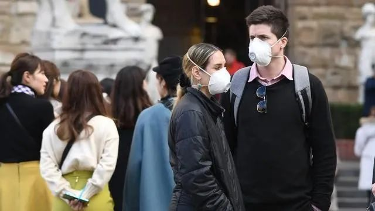

确诊95例！伊朗疫情愈演愈烈，卫生部副部长也中招…中东失守？
原文链接 备份链接 据路透社及伊朗当地媒体25日报道，伊朗卫生部副部长伊拉吉·哈利奇被确诊感染新冠肺炎病毒。路透社称，伊朗卫生部发言人已经确认了这一消息，并表示哈利奇正在接受治疗。 种种现象都显示，伊朗的疫情正在愈演愈烈，而其控制疫情的 …


截至目前，巴西确诊拉丁美洲首例新冠肺炎病例。疫情正在从意大利向国外蔓延，周边邻国瑞士、奥地利相继出现首例确诊病例，西班牙新增一例确诊病例，确诊患者均与意大利有关。
截至25日，中东有新冠肺炎确诊病例的国家已增至9个：伊朗(95例)、巴林(17例)、阿联酋(13例)、科威特(8例)、以色列(6例)、伊拉克(5例)、阿曼(4例)、阿富汗(1例)、黎巴嫩(1例)。该地区医疗水平和疫情控制能力参差不一，尤其是与伊朗相邻的一些国家尚处于战乱之中，伴随伊朗的输入型病例向周边蔓延，中东的疫情防控形势不容乐观。
随着疫情蔓延到30多个国家，全球恐慌情绪上升。

拉美国家首例！男子从意大利返回巴西后确诊新冠肺炎
据英国《卫报》报道，巴西2月25日出现首例新冠病毒核酸检测阳性病例，巴西官方消息称，这是一名近日从意大利回到巴西圣保罗市的61岁男子。这名男子成为巴西首例、也是拉丁美洲首例新冠肺炎确诊病例。
据报道，这名男子在2月9日至2月21日期间在意大利。他有轻微的症状，包括咳嗽。目前，这名男子在圣保罗的一家顶级医院接受治疗。
德国参议员：如有必要将封闭柏林
德国联邦参议院参议员安德烈亚斯⋅盖塞尔25日表示，鉴于新冠肺炎病毒可能在欧洲流行，柏林可能封城或者部分封城。
盖塞尔表示，柏林已经采取了适当的民事防护措施，制定了相应的计划。但如果情况危急，柏林将采取类似于意大利北部城市封城得措施。
盖塞尔强调，至于是否封城以及在多大程度上实施如此严厉的措施尚待观察。
当天，德国卫生部长斯潘在罗马表示，即使意大利爆发疫情，也不应该禁止跨境旅行。
美专家称新冠病毒在美社区传播是早晚问题 旧金山宣布进入紧急状态
据美国有线电视新闻网（CNN）报道，当地时间2月25日，美国疾病控制和预防中心（CDC）下属国家免疫和呼吸系统疾病中心主任南希·梅索尼耶警告称，卫生专家预计新冠肺炎疫情会在美国蔓延。报道称，梅索尼耶表示，“我们预计，我们会看到（新冠病毒）在这个国家出现社区传播。现在的问题不是这种情况会不会发生，而是究竟什么时候发生，以及这个国家将有多少人会患上严重疾病。”
CDC也在推特上发文，美国人要为应对疫情做好准备。“现在是美国企业、医院和社区开始为新冠肺炎可能的传播做准备的时候了。疾控中心将继续与商业、教育和医疗保健部门合作，同时提醒雇主做好准备。”
梅索尼耶表示，其所在机构希望人们能够理解，他们的生活可能会被打乱。“我们要求美国公众与我们一起做好准备。”梅索尼耶说，“过去一周的数据，以及（新冠肺炎）在其他国家的传播情况，无疑提高了我们的担忧程度，并提高了我们对社区传播的预期水平。”
截至25日，美国确诊病例已升至57例。其中，40例是从“钻石公主”号邮轮撤回的美国公民，14例为美国本土发现确诊病例，3例系从武汉撤回。
另据《国会山报》报道，出于对新冠肺炎疫情的担忧，旧金山市长伦敦·布里德于当地时间周二（25日）宣布该市进入紧急状态。
布里德在一份声明中说，虽然旧金山目前尚未有确诊病例，但“全球疫情形势正迅速变化，我们需要加强防范”。
东京奥运会或取消？
25日，曾担任过世界反兴奋剂机构前主席的迪克·庞德接受美联社采访时表示，如果新冠肺炎疫情在5月下旬得不到控制，2020年东京奥运会可能将被取消，而不是推迟或换城市举办。
对此，央视记者联系了东京奥组委进行核实。东京奥组会对记者称，国际奥委会指出，庞德的表态说明国际奥委会正在就如期举办东京奥运会进行准备，国际奥委会多次表示奥运会的准备工作正按计划推进，为了举办安心安全的奥运会，新冠肺炎的对策十分重要。东京奥组委将继续关注新冠肺炎的整体情况，并与相关机构紧密联合，研究必要的对策。至于3个月内（5月底前）为判断期限，这不是国际奥委会的官方见解。
据人民日报客户端消息，2月26日日本奥运担当大臣桥本圣子就此事表示，“（我们）已就此询问国际奥委会，国际奥委会回复称，‘这不是国际奥委会的官方主张，有这样的言论正说明了国际奥委会正在朝着东京奥运会按照计划举办的目标，开展准备工作。’”
关于即将于3月举行的东京奥运会火炬传递，日本官房长官菅义伟在26日的例行记者会上表示，并未从东京奥组委听到关于日程变化的消息，日本政府将与国际奥委会、东京奥组委、东京都开展紧密合作，稳步推进奥运会的准备工作。
安倍晋三：政府要求未来两周关键期内取消或推迟大型活动
当地时间26日，日本首相安倍晋三在有关疫情的政府工作会议上表示，政府将要求大型体育和文化活动的组织者考虑在未来两周内取消或推迟有关活动，他表示，未来两周是遏制新冠肺炎病例增加的关键时期。
“考虑到未来一到两周对阻止病毒扩散极为重要，政府认为体育、文化活动和大规模人群聚集存在很大的传播风险。”
日本北海道地区考虑全面停课
据日本放送协会（NHK）网站25日报道，截至当地时间25日晚24时，日本全国新增新冠肺炎确诊病例11例，确诊总数达到862例。其中北海道新增5例，确诊总数达到35例。

日本新冠肺炎确诊病例分布图（NHK）
北海道政府25日为此召开会议，决定要求北海道教育委员会考虑该地区所有公立学校停课，以防止感染扩大。
综合环球网、央视新闻、海外网等


推荐阅读

点击大图 |年营收8500亿元，同谷歌、苹果形成三足鼎立之势？华为引爆相关产业链

点击大图 |抢购、狂欢节叫停…新冠疫情在意大利“爆炸性扩散”意味什么？

原文链接 备份链接 据路透社及伊朗当地媒体25日报道，伊朗卫生部副部长伊拉吉·哈利奇被确诊感染新冠肺炎病毒。路透社称，伊朗卫生部发言人已经确认了这一消息，并表示哈利奇正在接受治疗。 种种现象都显示，伊朗的疫情正在愈演愈烈，而其控制疫情的 …
原文链接 备份链接 【财新网】（记者 丁捷 综合）中国国内疫情统计数据呈现向好的趋势，根据各地消息，全国已有六省下调重大突发公共卫生事件应急响应级别。尽管部分重症、危重症病例转为死亡病例，但总量在减少。另一方面，新冠肺炎疫情拉响全球警报， …
原文链接 备份链接 世界卫生组织官员对韩国和伊朗等地爆发新冠病毒疫情表示担忧，但表示情况尚未上升到大流行病的程度。在美欧金融市场，这一模式已变得清晰：新增确诊病例数=增加的市场恐慌=疲弱的资本市场。这一模式会否必然在中国出现，尚待观察 …
原文链接 备份链接 仁川国际机场。图片来源：Yonhap 记者：潘金花 “ 文在寅强调，“最大程度封锁”措施并非封堵和围困该地区，而是最大限度阻断疫情扩散，有关部门需争取使疫情拐点在本周之内到来。 ” 韩国中央防疫对策本部25日通报说，截 …
原文链接 备份链接 【财新网】（记者 丁捷 综合）当前全国疫情防控进入关键时期。重症和危重症患者数量仍然十分庞大。继2月2日武汉市开始推进“四类人员”集中收治隔离，2月3日武汉火神山医院启动急重症患者集中医治，首批面向轻症患者的“方舱医 …